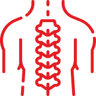

Шейный отдел
Дегенеративно-дистрофические болезни шейного отдела позвоночника, выявить опухоли и межпозвонковые грыжи, компрессионный перелом шейных позвонков

Грудной отдел
Нарушения не только в самих позвонках, но и близлежащих структурах. По снимкам МРТ можно установить заболевания и травмы спинного мозга, связок, суставов, мышц, а также изменения спинномозгового канала и различные аномалии развития
Поясничный отдел
Межпозвонковые грыжи, остеохондроз, переломы и другие травмы, артроз, болезни спинного мозга, распространение патологических процессов органов малого таза, онкологии